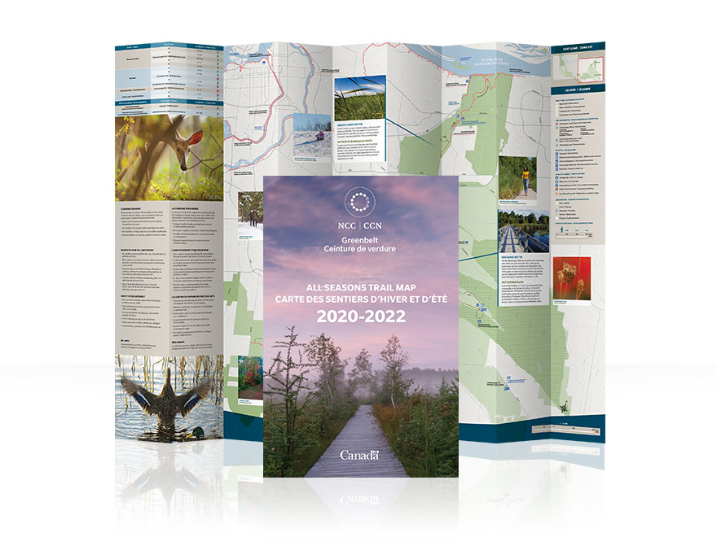
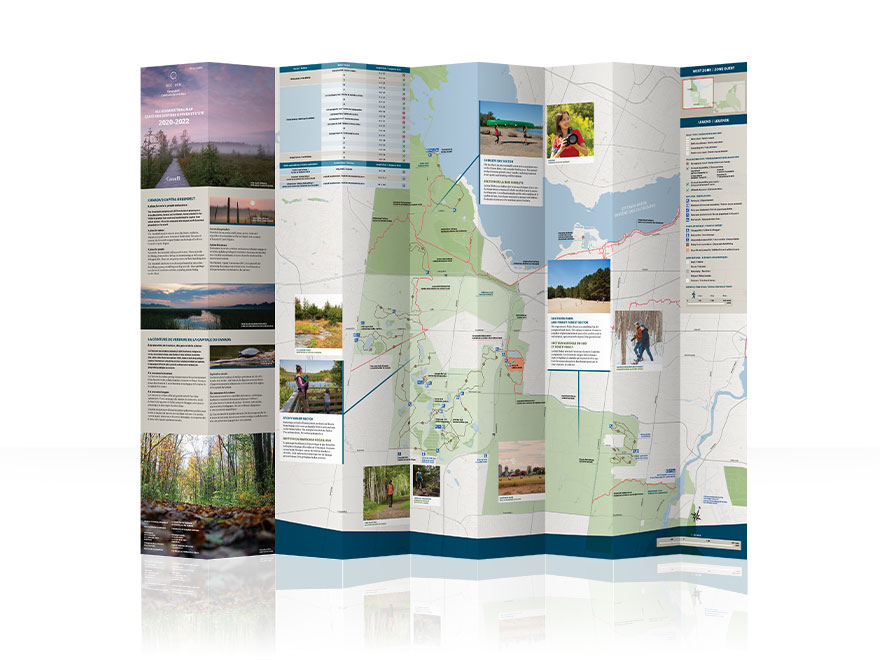
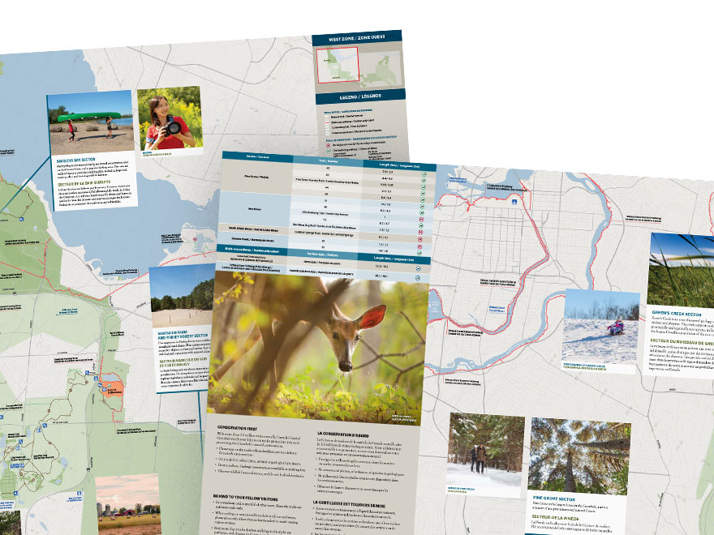

<!--Work Preview section-->
<section class="offset section">
			
	<!--Inner content-->
	<div class="innerContent">

		<!--Container-->
		<div class="container clearfix">
			<div class="fifteen columns">
				<div class="work-preview-close"></div>
			</div>
		</div>
		<!--Container-->
		
		<!--Container-->
		<div class="container clearfix">

			<div class="fifteen columns">

				<!--slider-->
				<div class="work-preview-slider clearfix flexslider" >

					<div>

						<ul class="slides">
							
							<li>
								
							</li>
							
							<li>
								
							</li>

							<li>
								
							</li>

							<li>
								
							</li>

						</ul>

					</div>
					
				</div>
				<!--slider-->

			</div>


			<div class="fifteen columns work-info">
				<h1 class="title">NCC Greenbelt Trail map 2020–2022<br><span>Print</span></h1>
				<p>Created in the 1950s, the Greenbelt protects 20,000 hectares of green space, including farms, forests and wetlands from urban sprawl. It has since become the largest publicly owned greenbelt in the world with most of the Greenbelt (14,950 hectares) owned by the NCC.</p>

				<p>Some of the benefits the Greenbelt offers are sustaining biodiversity in the protected lands and supporting human and ecological health in Canada’s Capital Region.</p>

				<p>Natives and visitors alike have the opportunity to experience these benefits through the multiple trails the NCC manages. With that, the Greenbelt needed a new trail map that highlighted all of the activities, points of interest, and rest stops you could find along the way.</p>

				<p>The main challenge of this project was to ensure every element in the Greenbelt was not only visible, but legible as well. The solution was to meticulously place each trail and street label, trail number, icon and photo so viewers of the map could get all of the information they need at a glance in both official languages.</p>

				<p>Features of this map include: large multi-panel images, informational panels about the Greenbelt, tables outlining details of each trail, descriptive pop-outs of each sector, activity features, and an extensive legend.</p>

				<p>Varying line styles identify every trail type and textures were created to distinguish certain areas like wetlands and dunes.</p>

				<p>NCC colours (blue, beige, and green) and branded elements were used strategically to maintain consistency and recognition. One important use of the NCC green was to clearly mark each sector and its boundaries by using assorted tints.</p>

				<p>The Greenbelt is an underrated place of beauty in Ottawa and has so much to do and see. It deserved a map that accentuated its assets and allows its visitors to take a step back and enjoy nature.
				</p>

				<!--<div class="social-icons">
					<ul>
						<li><i class="step fi-heart"></i><span>100</span></li>
						<li><i class="step fi-social-facebook"></i><span>620</span></li>
						<li><i class="step fi-social-twitter"></i><span>450</span></li>
						<li><i class="step fi-social-pinterest"></i><span>100</span></li>
					</ul>
				</div>-->

			</div>


		</div>
		<!--Container-->
	
	</div>
	<!--Inner content-->

	
</section>